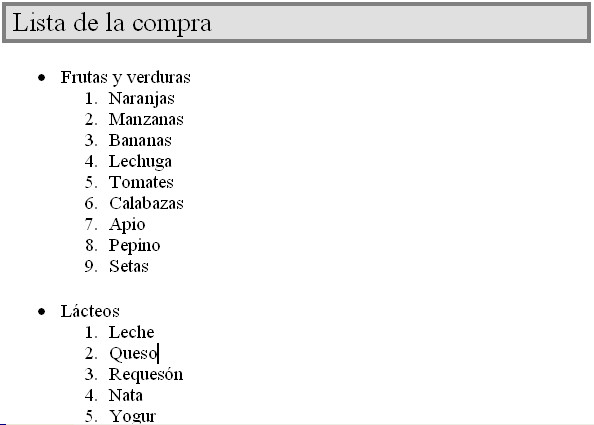
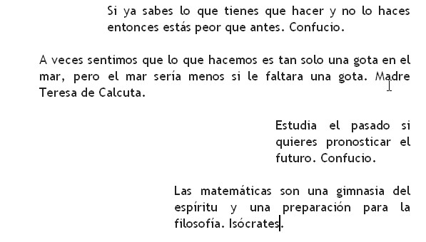

Vamos a realizar la segunda práctica de utilización del procesador de textos Word. Para ello, os propongo que descarguéis los documentos que se indican, y realicéis las tareas que se propone en ellos.
Ejercicio de ortografia
Para hacer este ejercicio deberéis descargaros el siguiente archivo.
Primero que nada, comprueba cuál es el diccionario que tiene establecido el documento. ¿Es correcto? Cambiale el diccionario al que le corresponda. Para ello, deberás seleccionar primero todo el texto, y posteriormente cambiarle el tipo de diccionario
Seguidamente, corrige las faltas de ortografía que te indica Word hasta que el documento esté correcto .
Ejercicio de numeración y viñetas
Crea un nuevo documento en Word, e intenta crear una lista como la siguiente que ves en esta imagen:
Ejercicio de sangrías
En ese mismo documento, teclea el texto y el formato que te pongo a continuación, poniendo especial interés en las sangrías.
Ejercicio de márgenes
Abre de nuevo el documento que hemos utilizado antes para corregir la ortografía, y cámbiale los márgenes, de manera que tengan 0,5cm de margen tanto en la zona superior, inferior, izquierda y derecha.